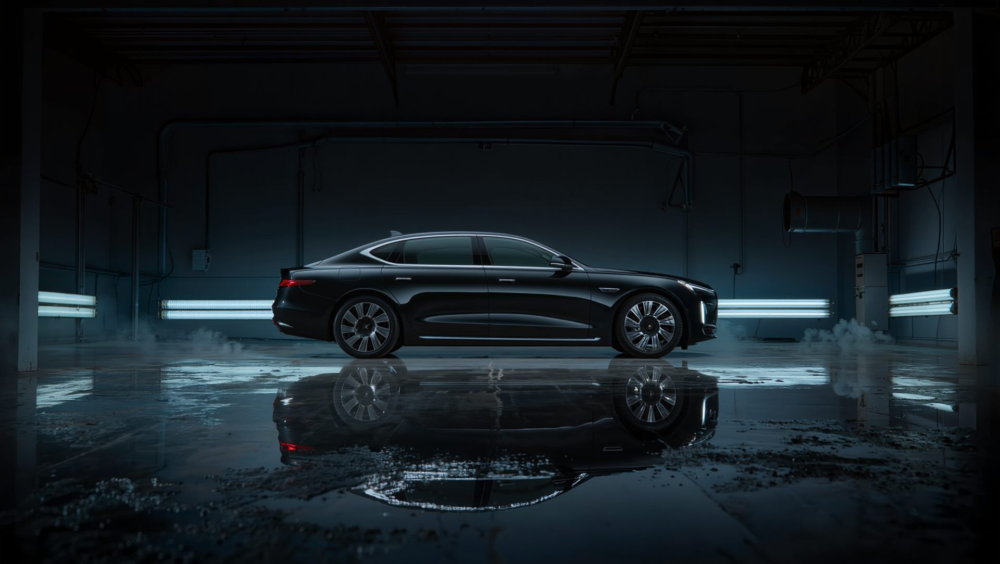
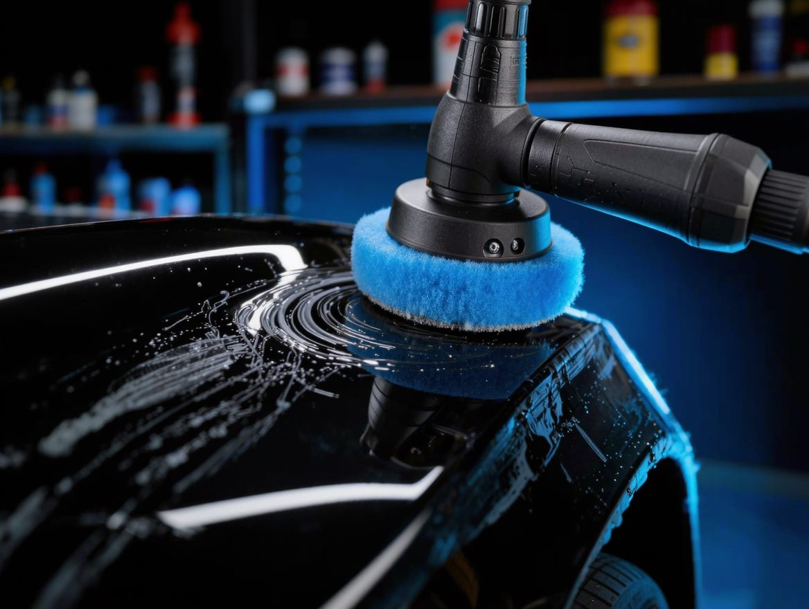
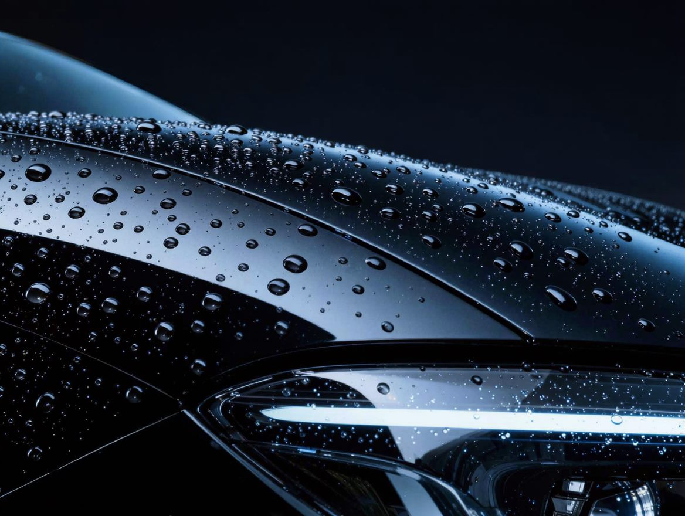
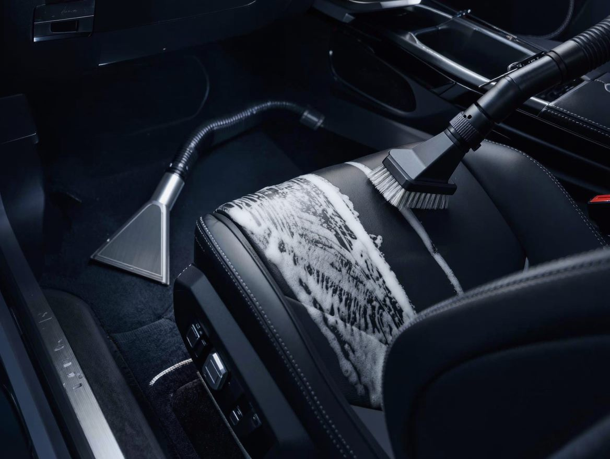
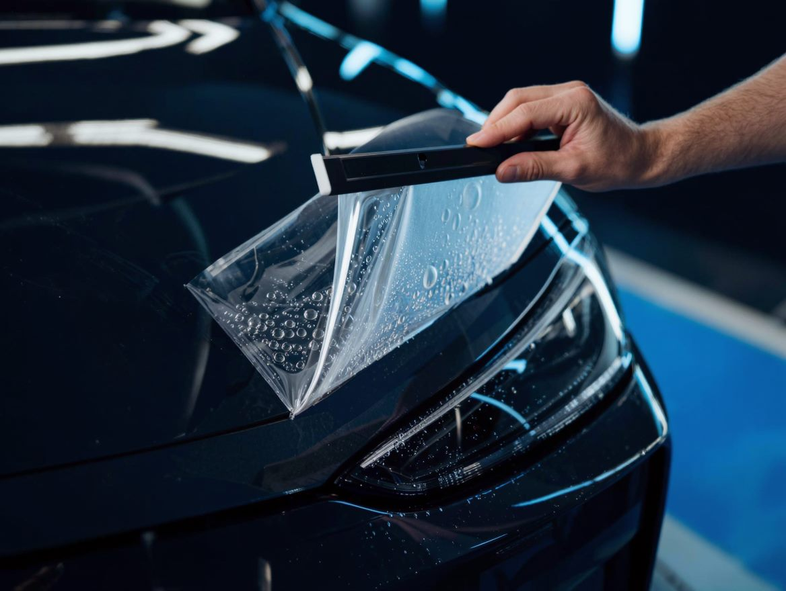
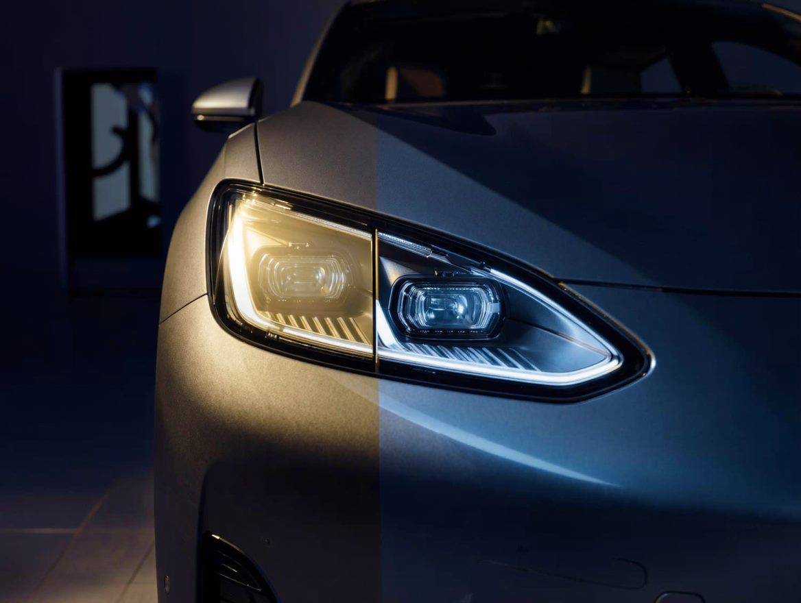
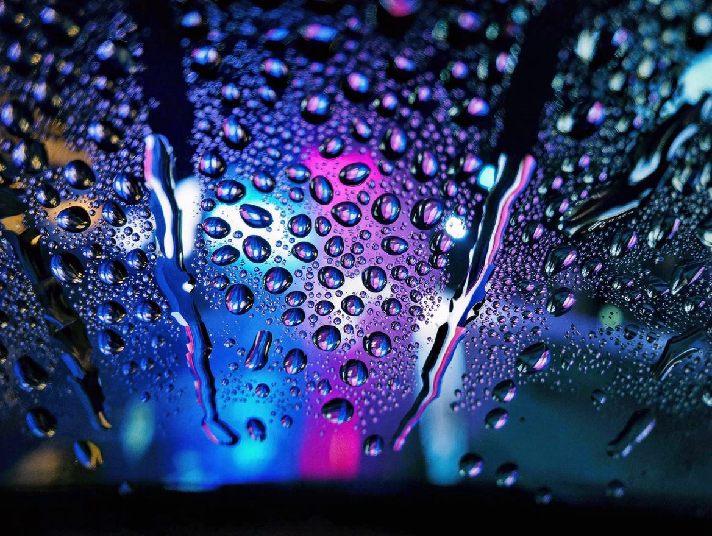

Комплексная мойка
Ручная мойка кузова, очистка дисков, стёкол, сушка микрофиброй.
от 1 500 ₽

Детейлинг-центр в Омске
Полировка, керамические покрытия, химчистка салона и бронирование плёнкой. Работаем с кузовом как с ювелирным изделием — по шагам, с гарантией результата.
Мойка + очистка кузова + защита. Быстро, аккуратно, по регламенту.
Спокойный сервис без навязывания и сюрпризов в чеке.
От 1 года на полировку и до 2 лет на керамику. Фиксируем в договоре.
Сначала осмотр и замеры толщины ЛКП, потом — предложение по работам.
Составы проверенных брендов: без вреда для лака, пластика и хрома.
Называем реальные сроки и держим их. Сообщаем о ходе работ.
Присылаем «до/после» по каждому этапу — видно, за что платите.
Тёплое помещение, кофе и Wi-Fi. Забирать авто приятно.
Итоговую стоимость подтверждаем после осмотра автомобиля.
Ручная мойка кузова, очистка дисков, стёкол, сушка микрофиброй.
Глубокая очистка текстиля, кожи, пластика. Устранение запахов и пятен.
Абразивная и защитная полировка. Убираем царапины, возвращаем глубину цвета.
Глянцевая или матовая керамика на 1–2 года. Гидрофоб и защита от реагентов.
Защита ЛКП полиуретановой плёнкой. Зоны: бампер, капот, пороги, фары.
Гидрофобное покрытие: вода и грязь скатываются, видимость в дождь выше.
Понятный процесс от звонка до сдачи авто.
Уточняем задачу по телефону, затем бесплатно осматриваем авто и называем цену.
Тщательная мойка и очистка — 80% результата детейлинга зависит от подготовки.
Полировка, нанесение покрытий или плёнки. Фотоотчёт по каждому этапу.
Показываем результат, даём рекомендации по уходу и гарантийный талон.
Примеры по направлениям — от полировки до защитных покрытий. Реальные фото «до/после» добавим из портфолио.






Потяните ползунок в сторону — увидите разницу. Кадры демонстрационные: скоро заменим на фото реальных работ.
Убрали голограммы от автомойки и мелкие царапины, вернули глубину чёрного цвета.
Убрали желтизну и помутнение — свет стал ярче и ровнее, фара выглядит как новая.
Собираем обратную связь после каждой работы.
«Делал керамику на Omoda. Машина как из салона, вода просто слетает. Отдельно отмечу фотоотчёт — видно каждый этап.»
«Химчистка после ребёнка и кофе на сиденье — вывели всё. Запаха нет совсем. Приятно, что честно назвали цену заранее.»
«Бронировал перед поездкой на юг. Сделали за день, аккуратно, без пузырей. Рекомендую.»
Собрали то, о чём спрашивают чаще всего. Не нашли ответ — напишите в Telegram.
Зависит от работ: комплексная мойка — 1–2 часа, химчистка салона — 4–6 часов, полировка кузова — от 1 дня, керамика — 2–3 дня вместе с подготовкой и сушкой, бронирование плёнкой — от 1 до 3 дней по объёму зон. Точный срок называем после осмотра и держим его.
Нет. Мойка и подготовка поверхности — часть работы, и делать её нужно в правильной последовательности. Приезжайте как есть: мы сами отмоем, обезжирим и подготовим кузов.
Зависит от состава и условий эксплуатации: базовые покрытия служат около года, более плотные — до 2 лет. Раз в год рекомендуем приезжать на диагностику гидрофобных свойств и поддерживающий уход — так покрытие живёт дольше.
Можно, но лучше бесконтактно и без жёстких щёток. После нанесения покрытий мы даём памятку по уходу: первая мойка — не раньше чем через 7 дней, без абразивных составов и полиролей.
Это разные задачи. Керамика даёт блеск, гидрофоб и облегчает уход, но не спасает от сколов. PPF физически защищает лакпокраску от камней, веток и царапин. Часто делают оба: плёнку на уязвимые зоны и керамику сверху.
Да, гарантия фиксируется в договоре: от 1 года на полировку и до 2 лет на керамику. Она покрывает дефекты нанесения — отслоения, помутнение, неравномерность. Механические повреждения и результат самостоятельного ухода в гарантию не входят.
Мы работаем по записи — так вы не ждёте и получаете нужное время в боксе. Оставьте заявку или позвоните: подберём удобный день и час.
Оставьте заявку — перезвоним в течение 15 минут, уточним задачу и свободное время.
г. Омск, ул. Мира, 9/2
Ежедневно
09:00 — 21:00